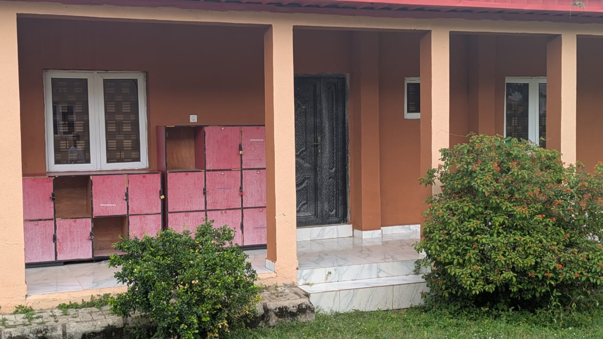
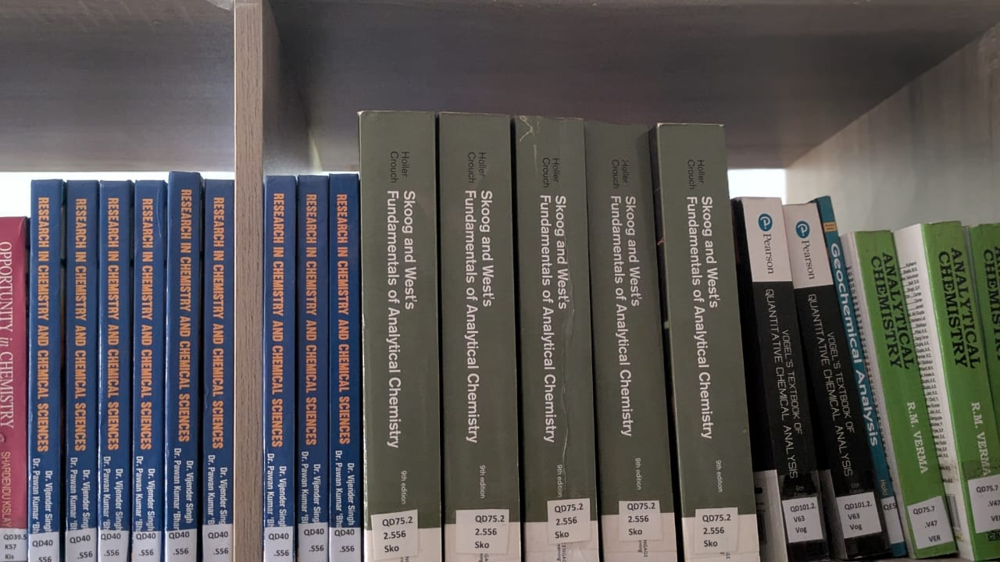

About CUSTECH University Library
The CUSTECH University Library is an important academic resource centre of the Confluence University of Science and Technology. It is established to support the teaching, learning and research activities of students, lecturers, researchers and other members of the university community.
The library provides access to books, academic publications, reference materials, past examination questions and electronic learning resources. It also provides a suitable environment where students can read, study, carry out research and improve their academic knowledge.
Through the library portal, users can obtain important information about library services, available resources, borrowing procedures, opening hours, rules and other academic resources provided by the library.
Our Library

The CUSTECH University Library provides a supportive environment for students and staff to access information and develop their academic and research skills. The library serves as a central point for accessing useful learning materials and information resources.
History of CUSTECH
Confluence University of Science and Technology (CUSTECH), Osara, Kogi State, was established to provide quality education with strong emphasis on science, technology, innovation and practical learning.
The establishment of the university was approved by the Kogi State Government in 2020. The university was created to contribute to the development of skilled graduates who can apply knowledge, technology and innovation to solve real-world problems.
As part of the university's academic environment, the University Library plays an important role in supporting the educational objectives of the institution by providing information resources for teaching, learning and research.
Learning and Research Environment

A good library environment helps students concentrate on their academic activities. The CUSTECH University Library provides spaces where users can read, study and consult academic materials.
Students can make use of the available resources to prepare for examinations, complete academic assignments and carry out research related to their courses of study.
Vision of the Library
To provide a modern and supportive academic library environment that promotes effective learning, teaching, research, innovation and access to reliable information resources.
The library seeks to contribute to the academic development of CUSTECH by making relevant information resources and services accessible to members of the university community.
Mission of the Library
The mission of the CUSTECH University Library is to provide relevant and accessible information resources and services that support teaching, learning and research within the university.
The library also encourages effective use of information resources, independent learning, research activities and responsible use of academic information.
Objectives of the Library
The major objectives of the CUSTECH University Library include:
- To provide relevant books and information resources to students and staff.
- To support teaching, learning and research activities within the university.
- To provide access to electronic and digital information resources.
- To encourage students to develop effective reading and information-searching skills.
- To provide a suitable environment for individual study and academic activities.
- To support students and researchers in locating useful academic information.
- To preserve and organize academic and institutional information resources.
- To promote responsible and effective use of library resources.
Major Library Services
The library provides different services and resources designed to meet the academic needs of members of the university community.
Book Services
Access books and other learning materials that support different academic programmes and courses.
View BooksE-Library
Explore electronic learning materials and digital academic resources available through the library portal.
Visit E-LibraryPast Questions
Access past examination and continuous assessment questions to support academic preparation.
View QuestionsSupporting Teaching, Learning and Research
The University Library is an essential part of the academic community. It supports students by providing access to information needed for coursework, assignments, examinations and personal academic development.
Lecturers and researchers can also make use of library resources when preparing teaching materials, conducting research and locating relevant academic information.
Students are encouraged to make regular use of library resources, maintain a good study habit and observe all library rules and regulations while using the facilities.
Explore the Library
Use the links below to learn more about the library and its services.